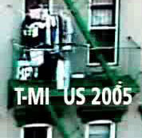
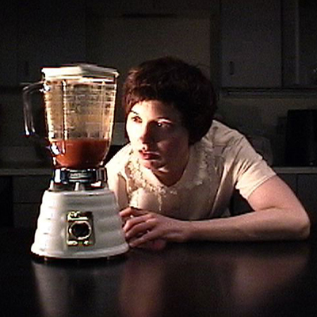
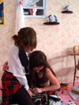

people doing strange things with electricity
The twelve thousandth dorkbot-nyc meeting took place on Wednesday, March 2nd, 2005, 7pm at
Location One in SoHo.
It Featured the lovely and talented:
 Chris Jordan and Joshua Goldberg: T-MINUS 2005
Chris Jordan and Joshua Goldberg will talk about T-MINUS 2005, the timelapse-based art show they curated in February. They'll talk about the works and the artists' methods and motivations, as well as lessons learned from curating the show for two years. They'll also preview the DVD catalog of the show.
http://www.t-minus.org Kelly Dobson: Blendie & Wearable Body Organs
Long before implants, splicing, and cyborgs, people and machines co-evolved as companion species. Critical work happens in the connection between people and machines during Machine Therapy sessions. The machines have expressive and engaging behaviors, and their strength of character and neurotic propensities are celebrated. Blendie, an interactive voiced blender, helps users find sensorial energies put to sleep by enculturation, while Wearable Body Organs is a series of very visible, spectacular, or even bizarre prostheses that facilitate otherwise repressed screaming, hugging, crying, or thrashing.
http://web.media.mit.edu/~monster Karla Grundick and Mistress Koyo: Linux Virgin
Karla Grundick and Mistress Koyo will talk about their website, http://linuxvirgin.info, its making, and the Linux community's reactions. In its brief public exposure the linux virgin project has rapidly become a site of contagious, or viral, information exchange. During the two week preview stage, before the official launch of the site on Valentines Day, our project was blogged, linked, posted, and commented on all over the world wide web. We would very much like to discuss ideas with you on how to use the overwhelming response to that website for future projects.
http://linuxvirgin.info
Some images from the meeting are here.